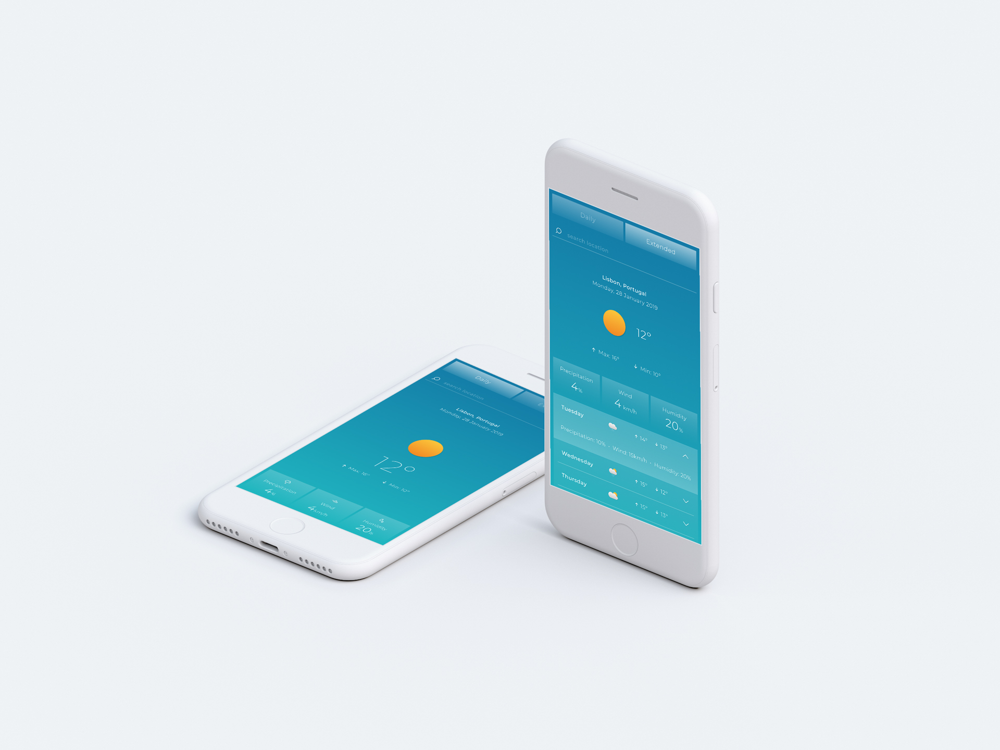
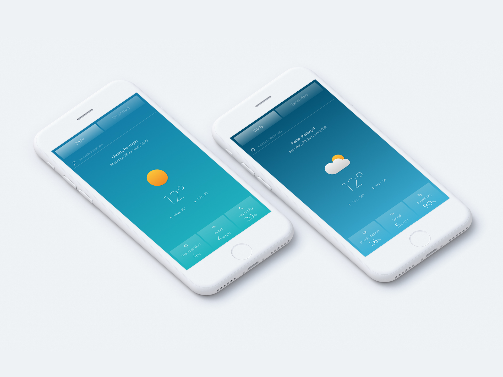
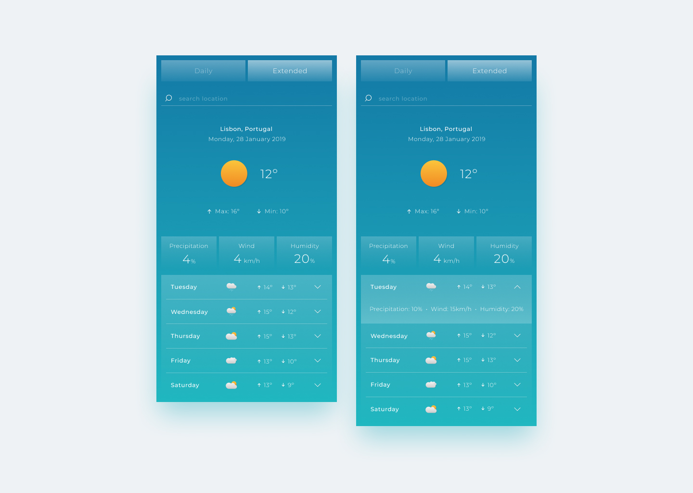
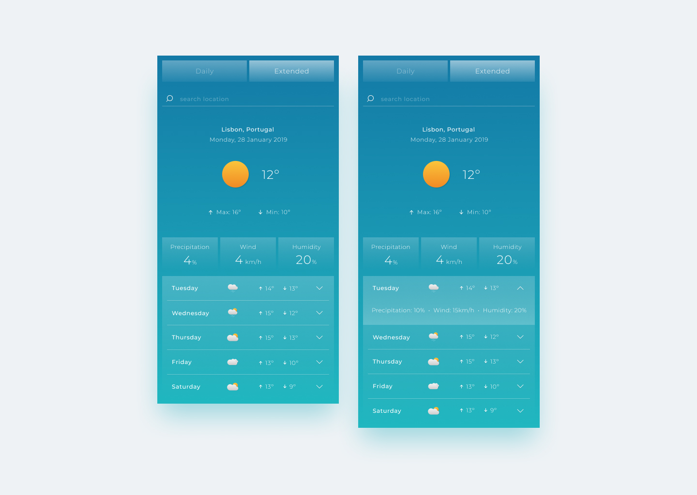
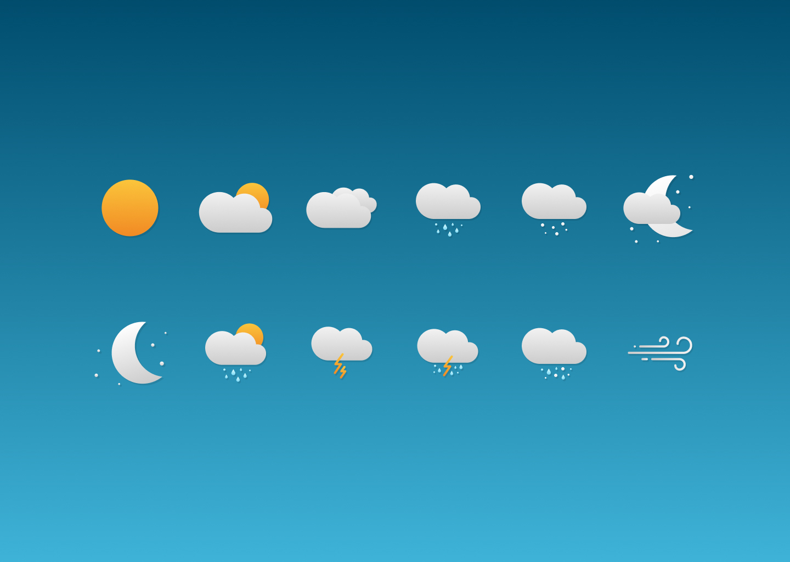
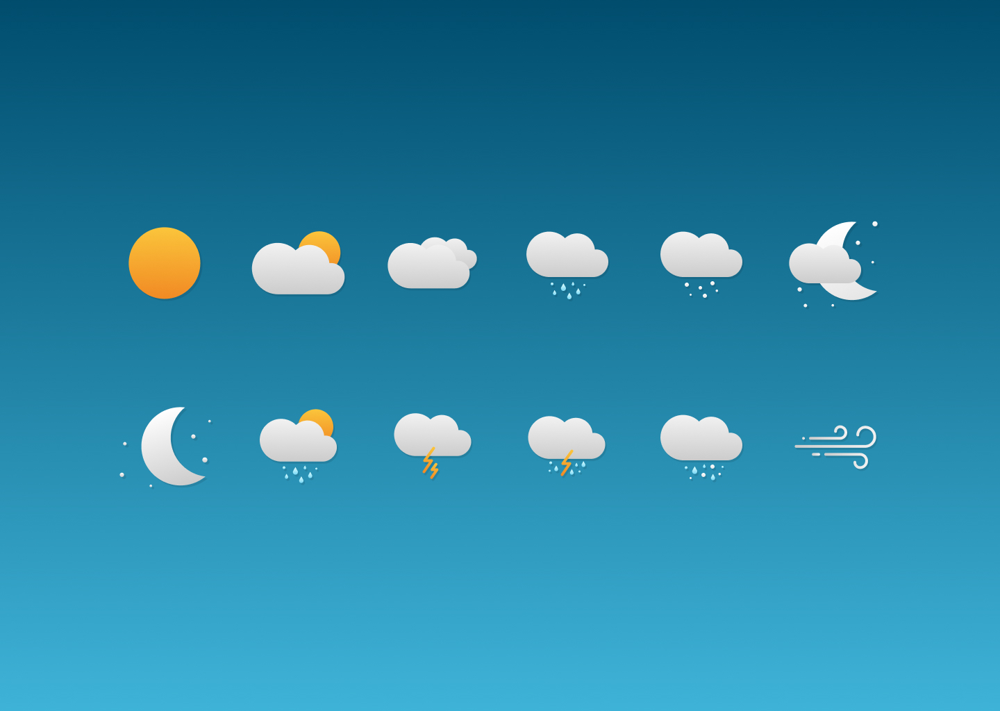
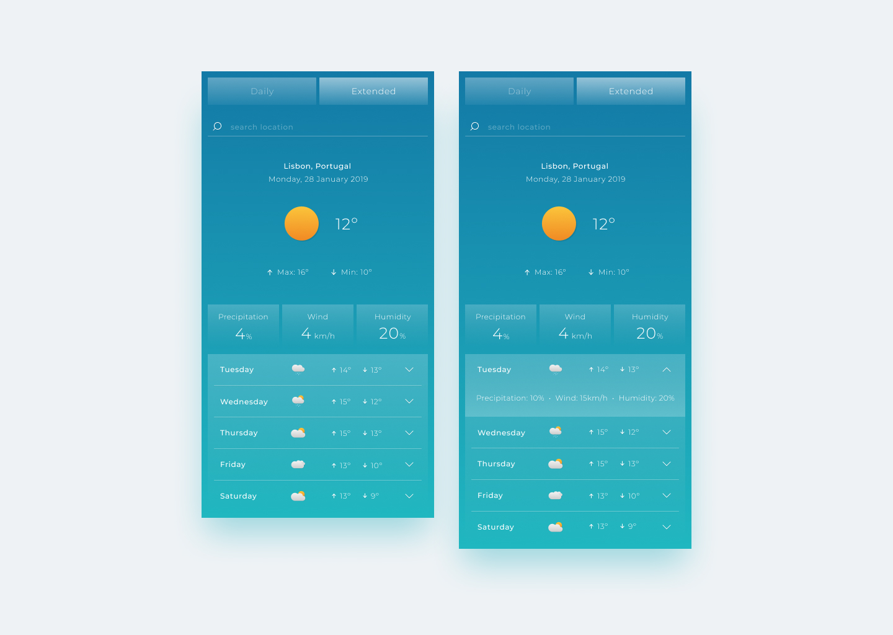
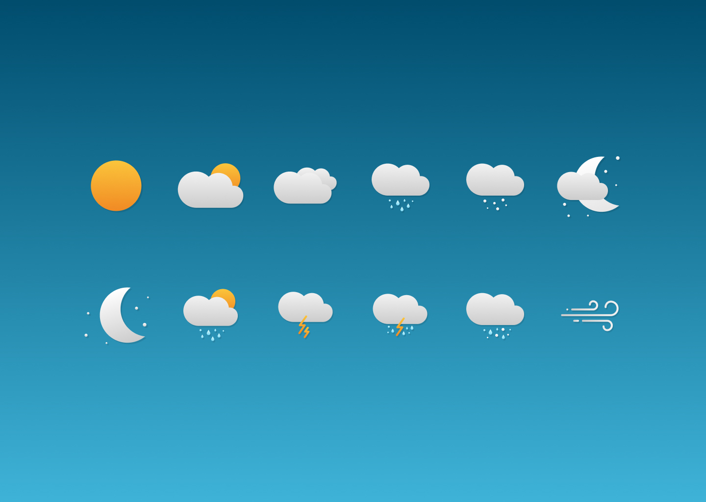

Weather App
2019 /UI Design /Personal Project
Creation of User Interface Design for a Weather App. Personal project made in
collaboration with João
Bairrada that
develop the app.
I used Figma to design and prototype the app, and Illustrator to design the icons.


 


 



go back
back to top